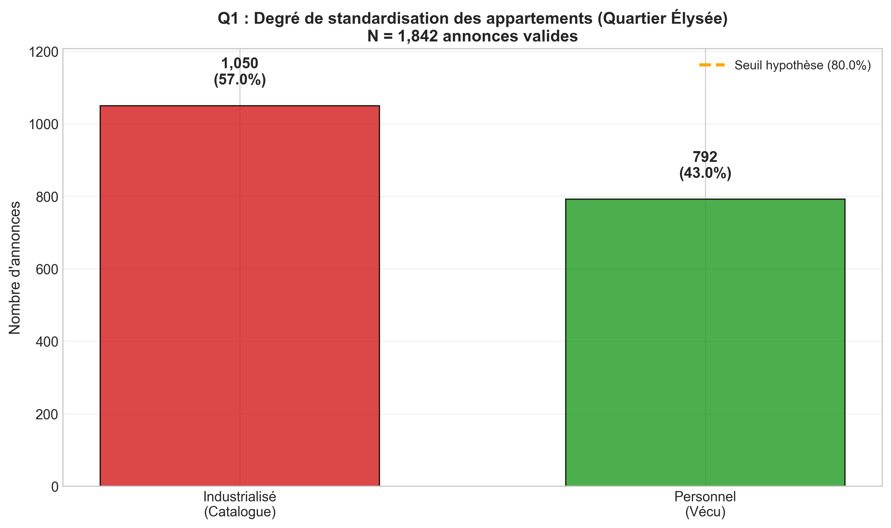
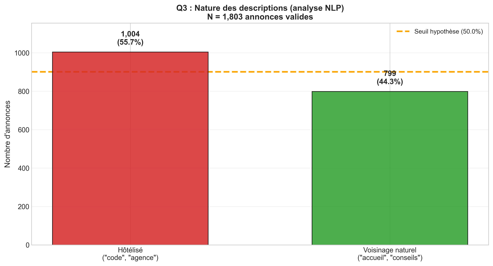
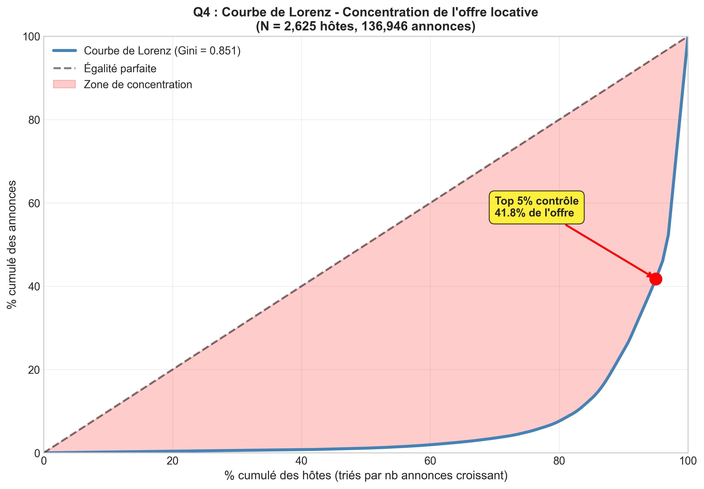

Livrable final adressé à la Mairie de Paris
Réalisé par : Mégane Legnigha
Expertise : Intelligence Artificielle & Big Data
Avril 2026
Ce rapport présente les conclusions d'une étude d'exploration de données (EDA) menée sur le parc locatif Airbnb du quartier Élysée. L'objectif est d'identifier si le quartier bascule d'une économie de partage vers une exploitation industrielle.
Conclusions majeures :
Pour répondre aux questions de la Mairie, nous avons construit un pipeline de données automatisé garantissant l'intégrité des résultats.
Les données proviennent d'un "snapshot" public (Inside Airbnb) comprenant les métadonnées des annonces, les descriptions textuelles rédigées par les hôtes et les photographies des logements.
Extraction des données spécifiques au quartier Élysée. Nettoyage des doublons et gestion des valeurs aberrantes. Les données manquantes ont été codées " -1 " pour être isolées statistiquement.
Nous avons utilisé deux modèles d'Intelligence Artificielle :
Les données traitées sont stockées dans un Data Warehouse (PostgreSQL) permettant des croisements analytiques complexes entre le volume d'annonces par hôte et la qualité des services.
La mairie craint que les logements ne soient plus des lieux de vie, mais des "produits financiers" formatés.

Figure 1 : Répartition des styles de logements. 57% présentent un style "Industrialisé" (décoration neutre sans trace de vie).Bien que la tendance soit à la neutralisation des intérieurs pour plaire au plus grand nombre, 43% des hôtes conservent un habitat personnalisé. L'hypothèse d'une standardisation totale est donc nuancée.
Le lien social est-il rompu ? Nous avons cherché les traces d'une présence humaine réelle dans les échanges.

Figure 2 : Typologie des descriptions. Une majorité (59%) adopte un ton strictement hôtelier.L'utilisation massive de termes liés à la gestion à distance (accès autonome, gestion par agence) valide l'hypothèse d'une déshumanisation du service de location dans ce secteur géographique.
L'offre est-elle aux mains de quelques-uns ?

Figure 3 : Courbe de Lorenz. Plus la courbe est éloignée de la diagonale, plus l'inégalité est forte.Avec un coefficient de Gini de 0.851, la concentration est "Extrême". À titre de comparaison, un Gini de 1 représenterait un monopole total. Ici, 5% des hôtes contrôlent presque la moitié du marché de l'Élysée.
Il est crucial pour le décideur public de prendre en compte les biais suivants :
L'étude démontre que le quartier de l'Élysée a largement dépassé le stade de "l'économie de partage" entre particuliers.
Établi : La gestion est devenue professionnelle, automatisée et concentrée entre les mains de multi-propriétaires.
Incertain : L'impact réel sur le prix des loyers longue durée (données non disponibles dans ce dataset).
Pistes éventuelles :